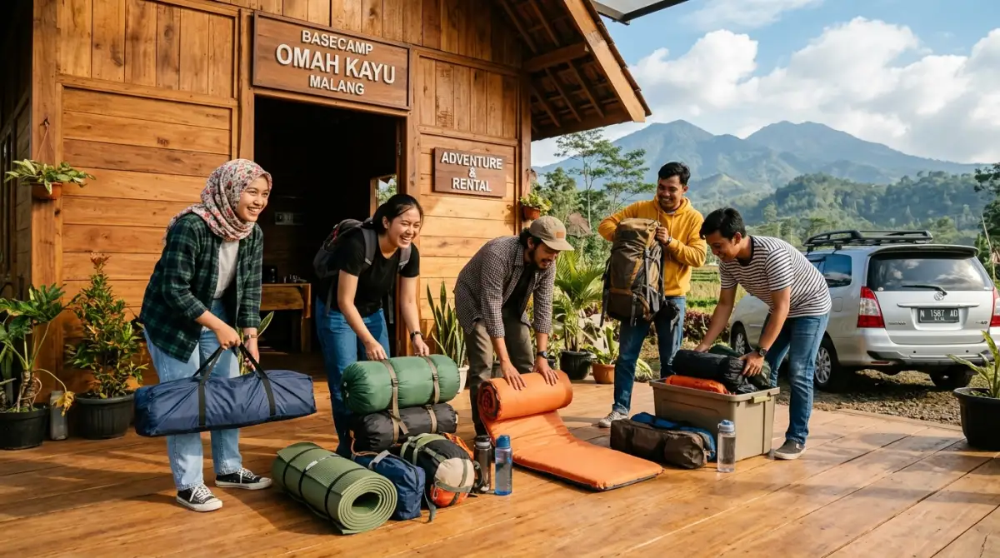
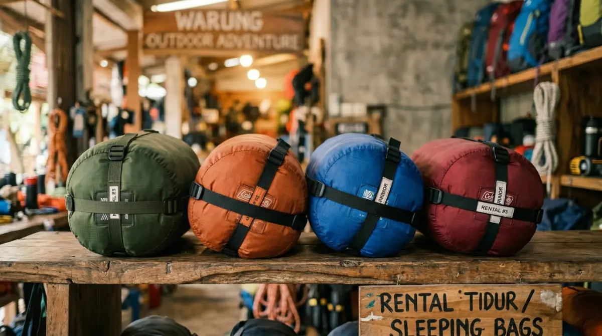

Penyewaan tenda kemah profesional — tinggal datang, alat sudah siap, liburan bisa langsung dimulai.Pernah nggak sih kamu merasa waktu berjalan terlalu cepat? Tahu-tahu sudah hari Jumat lagi, sementara tumpukan revisi laporan di meja kerja rasanya nggak berkurang sama sekali. Otak rasanya sudah mendidih, dan butuh banget pelarian ke alam bebas. Bayangan menikmati sunrise keemasan dari perbukitan berselimut kabut di Malang atau Batu pasti langsung melintas di kepala. Namun, semangat itu sering kali mendadak kempis begitu sadar kamu nggak punya perlengkapan kemah.
Jangan sampai kamu membatalkan niat healing dan akhirnya menyesal karena cuma bisa rebahan di kosan sambil scrolling foto liburan orang lain. Masa mudamu, atau momen emas bareng keluarga, terlalu berharga untuk dilewatkan hanya karena alasan teknis.
Lewat panduan ini, aku akan membantumu menemukan solusi paling praktis, hemat, dan anti-ribet: layanan dari pusat penyewaan tenda kemah yang siap memfasilitasi liburan alammu, lengkap dengan segala pernak-perniknya. Kamu cukup bawa diri dan pakaian hangat, sisanya biarkan ahlinya yang mengurus!
Mengapa Dataran Tinggi Malang dan Batu Jadi Primadona?
Bagi warga Jawa Timur, kawasan Malang dan Batu ibarat oase di tengah hiruk-pikuk kehidupan industrial. Berada di ketinggian dengan rata-rata suhu yang sejuk cenderung dingin, kawasan ini menawarkan topografi yang sangat ramah untuk kegiatan outdoor. Mulai dari kawasan wisata Coban Rondo, area Paralayang Gunung Banyak, hingga sabana di lereng Gunung Panderman.
Kemah di sini bukan lagi sekadar kegiatan survival ekstrem di tengah hutan belantara, melainkan sudah bergeser menjadi gaya hidup kaum urban. Mengambil jeda sejenak untuk menghirup udara segar yang bebas polusi adalah cara paling ampuh untuk mereset pikiran.
Ibarat laptop yang sudah overheating karena membuka terlalu banyak tab browser, tubuh dan pikiran kita juga butuh di-restart agar kembali optimal saat menghadapi tumpukan email di hari Senin nanti.
Drama Menyiapkan Perlengkapan Kemah Sendiri
Bagi pemula atau keluarga yang baru ingin mencoba sensasi tidur di alam terbuka, ide untuk membeli semua peralatan kemah dari nol seringkali layu sebelum berkembang. Coba deh bayangkan, kamu harus membeli tenda double layer, matras tidur, sleeping bag yang layak, lampu badai, kompor portable, sampai nesting (panci kemah). Total biayanya bisa setara dengan gaji UMR satu bulan!
Belum lagi masalah perawatannya. Setelah pulang kemah dengan badan lelah, kamu harus menjemur tenda, mencuci panci yang berkerak, dan melipat semuanya dengan rapi. Kalau ada bagian yang lembab, tenda bisa berjamur dan rusak.
Pada akhirnya, peralatan mahal itu cuma akan berakhir di sudut gudang rumah, berdebu layaknya tumpukan arsip perusahaan dari tahun 2010. Di sinilah mengapa memanfaatkan jasa penyewaan tenda kemah jauh lebih logis dan efisien secara finansial. Konsepnya sama dengan perusahaan yang lebih memilih menyewa software berbasis cloud (SaaS) daripada membangun server sendiri; bayar sesuai pemakaian, praktis, dan selalu dapat fasilitas ter-update.
Standar Kualitas Tinggi di Pusat Penyewaan Profesional
Ketika berbicara soal menyewa alat tidur, hal pertama yang pasti terlintas di pikiranmu adalah kebersihan. Wajar saja, siapa yang mau tidur di dalam tenda yang bau apek atau memakai sleeping bag yang belum dicuci dari penyewa sebelumnya?
Sebagai seseorang yang sering mengorganisir kegiatan outbound dan kemah, aku sangat merekomendasikan layanan profesional seperti Batu Sunrise Camp. Penyedia jasa di level ini tidak beroperasi seperti rental abal-abal di pinggir jalan. Mereka menerapkan standar maintenance yang sangat ketat.
Setiap kali barang kembali dari pelanggan, tenda akan dibersihkan dari tanah, dilap, dan diangin-anginkan. Sleeping bag selalu dicuci menggunakan disinfektan dan pewangi, sehingga saat kamu menerimanya, rasanya persis seperti sprei hotel yang baru diganti.
Selain itu, pengecekan kelayakan fungsi alat dilakukan secara berkala. Rangka tenda (frame) yang retak, ritsleting yang macet, atau kompor yang salurannya tersumbat akan langsung masuk ruang perbaikan atau dipensiunkan. Inilah bentuk jaminan keamanan dan kenyamanan yang membuat acara berburu sunrise-mu bebas dari drama bocor saat hujan.

Sleeping bag selalu dibersihkan dan disterilisasi setelah setiap pemakaian — kebersihan adalah prioritas utama.Pilihan Paket Sewa untuk Berbagai Kebutuhan Liburan
Pusat penyewaan tenda kemah yang kredibel biasanya sudah merancang paket-paket khusus agar kamu nggak bingung memilih barang satuan. Ibarat paket bundling internet, semuanya sudah dihitung agar lebih hemat dan tepat guna.
1. Paket Keluarga dan Rombongan Outbound
Buat kamu yang berencana mengadakan family gathering atau outbound kecil-kecilan bersama divisi kantormu, ketersediaan tenda berkapasitas besar adalah kunci. Daripada menyewa banyak tenda kecil yang membuat anggota terpisah-pisah, penyedia alat biasanya menawarkan tenda dome berkapasitas 6 hingga 8 orang.
Paket ini umumnya sudah dilengkapi dengan flysheet berukuran ekstra lebar (untuk membuat semacam teras atau ruang tamu agar terhindar dari embun pagi), matras spons tebal yang menutupi seluruh lantai tenda, dan lampu tenda bertenaga baterai yang terang. Beberapa penyedia bahkan menyertakan meja dan kursi lipat outdoor agar sesi ngopi pagi di Batu terasa lebih estetik dan elegan.
2. Paket Berburu Sunrise Ceria (Pasangan / Anak Muda)
Kalau tujuanmu sekadar lari sejenak berdua dengan pasangan atau teman circle terdekat, paket untuk 2-4 orang adalah pilihan paling compact. Tenda yang digunakan biasanya lebih ringan, mudah dirakit (bahkan oleh orang awam yang belum pernah memegang pasak tenda sekalipun), namun tetap tahan terhadap hembusan angin malam di lereng gunung.
Dalam paket ini, kamu sudah mendapatkan sleeping bag tebal per individu dan matras foil alumunium. Matras jenis ini sangat penting karena berfungsi memantulkan suhu panas tubuh, sehingga kamu tetap merasa hangat meski suhu udara di luar sedang anjlok mendekati 15 derajat Celcius.
3. Tambahan Paket Logistik dan BBQ
Liburan ke alam kurang lengkap rasanya tanpa acara bakar-bakaran. Daripada repot membawa panggangan dari rumah yang ukurannya memakan tempat di bagasi mobil, kamu bisa menyewa peralatan logistik ini sekaligus.
Paket masak biasanya berisi kompor portable, gas kaleng cadangan, grill pan (panggangan anti lengket), hingga perlengkapan makan. Membakar sosis, jagung, atau slice daging sapi di bawah taburan bintang Kota Batu sambil bercengkerama santai adalah stress-relief terbaik untuk meredakan burnout. Obrolan soal deadline atau kelakuan bos yang menyebalkan dijamin akan berganti menjadi gelak tawa yang hangat.
Kesimpulan: Ciptakan Momen Sekarang, Jangan Menunggu Nanti
Pekerjaan memang penting, dan target perusahaan tentu harus dikejar. Namun, siklus itu tidak akan pernah ada hentinya. Selalu akan ada project baru, klien baru, dan masalah baru di kantor. Kalau kamu selalu menunggu waktu "benar-benar luang" untuk liburan, percayalah, waktu itu tidak akan pernah datang.
Lima atau sepuluh tahun dari sekarang, kamu mungkin sudah tidak ingat materi presentasi apa yang kamu buat minggu lalu, tetapi kamu pasti akan mengingat momen tertawa bersama sahabat sambil menggigil kedinginan di depan tenda.
Hadirnya pusat penyewaan tenda kemah yang profesional membuat segalanya kini sangat mudah. Kamu nggak perlu pusing memikirkan modal beli alat, perawatannya, apalagi drama membersihkannya sepulang liburan. Kunci jadwalmu akhir pekan ini, hubungi penyedia jasanya, dan biarkan alam menyembuhkan penatmu. Liburan praktis, tinggal berangkat, dan bawa pulang kenangan manis!
FAQ